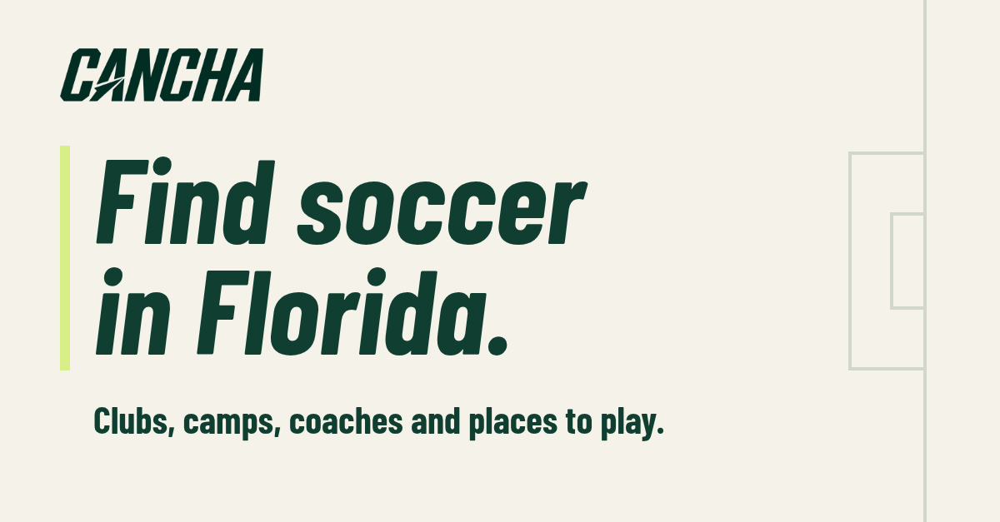
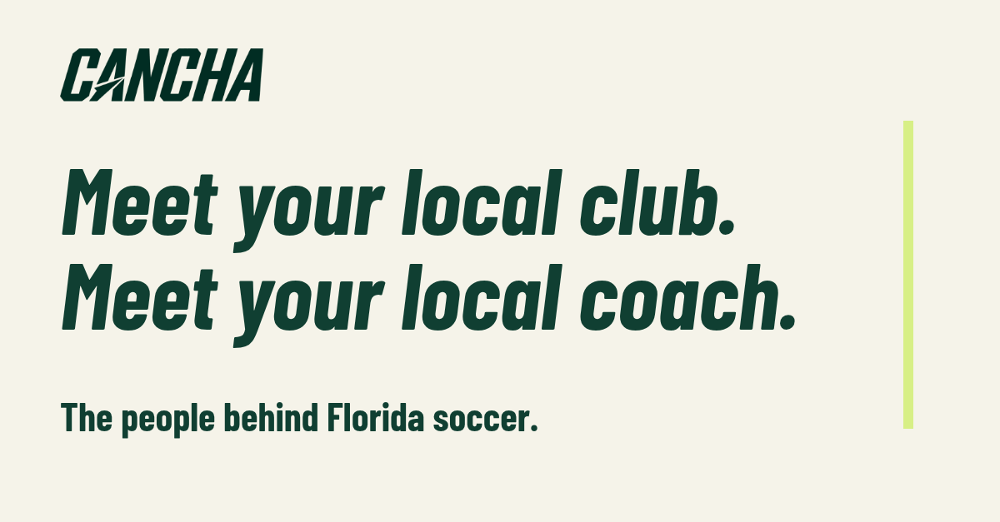
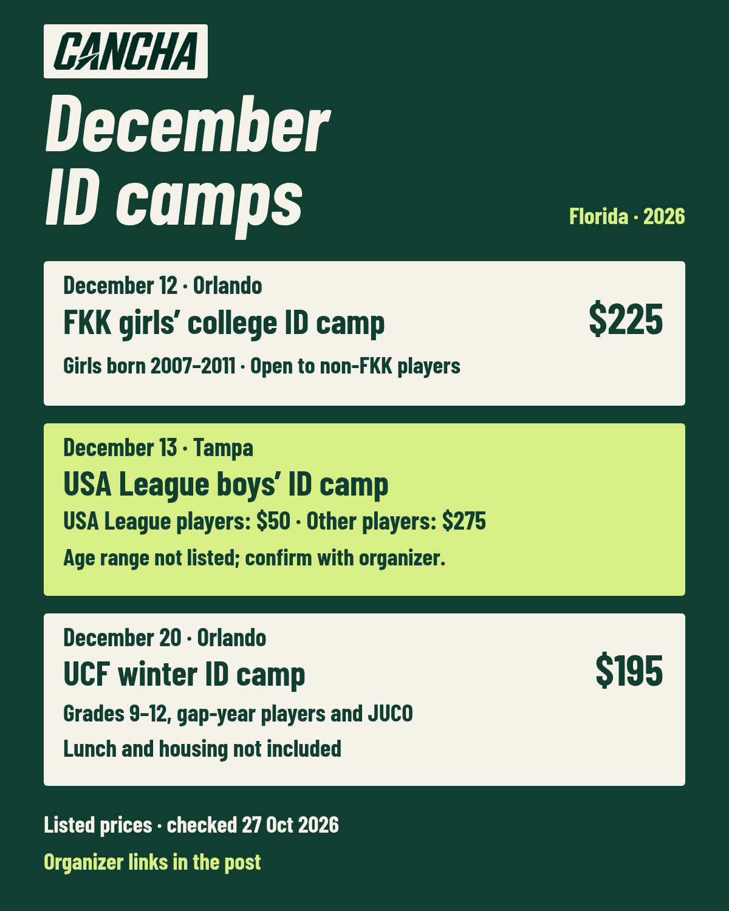

Discover soccer opportunities and the people behind them in Florida.
Internet Publishing · Florida
https://pioneering-friday-005497.framer.app/
FollowMore
About Cancha
Cancha is a soccer discovery platform and brand starting in Florida. It helps players and parents find clubs, academies, camps, coaches, development programs and places to play.
The initial focus is Orlando and the surrounding area, Tampa Bay, and Miami/South Florida.
Alongside practical program information, Cancha is developing Meet Your Local Club and Meet Your Local Coach: short features about the people behind local soccer, who they serve and what families should know before joining.
Founded by soccer coach and former college player Jose Del Vecchio, Cancha is in its early stages. The directory is growing, and the project is reaching out to local operators as it prepares for a fuller launch.
Follow for Florida soccer opportunities, useful guides and updates from the people building the local game.
Finish in LinkedIn
Confirm the signed-in profile is Jose Del Vecchio. Check managed Pages and existing Cancha Experience entries first; edit existing items rather than creating duplicates.
Create a free Company Page only if none exists. Paste the fields below, upload the 400 × 400 logo and 1512 × 256 cover, then add About and the optional specialties. Confirm the slug in the form; the proposed URL is not reserved.
Edit or add Founder, August 2026–Present. Choose the actual Cancha Page from the company selector. Keep Notify network and Update my headline off; preserve the previous primary position and other roles. Save, then click the company name/logo to verify the link.
No personal email, phone or street address is included. Free CTA visibility is under More; do not buy Premium. Industry is a taxonomy-backed recommendation; organization type/size labels require the actual selector. Field limits, existing drafts and account settings could not be inspected without authentication.
Company Page fields
Page name
Cancha
Public URL slug — proposed, not reserved
wearecancha
Tagline · 68 characters
Discover soccer opportunities and the people behind them in Florida.
About · 816 characters
Cancha is a soccer discovery platform and brand starting in Florida. It helps players and parents find clubs, academies, camps, coaches, development programs and places to play.
The initial focus is Orlando and the surrounding area, Tampa Bay, and Miami/South Florida.
Alongside practical program information, Cancha is developing Meet Your Local Club and Meet Your Local Coach: short features about the people behind local soccer, who they serve and what families should know before joining.
Founded by soccer coach and former college player Jose Del Vecchio, Cancha is in its early stages. The directory is growing, and the project is reaching out to local operators as it prepares for a fuller launch.
Follow for Florida soccer opportunities, useful guides and updates from the people building the local game.
Website
https://pioneering-friday-005497.framer.app/
Industry
Internet Publishing
Organization size — confirm current selector
0–1 employees
Organization type — confirm current selector
Self-owned
Broad operating location — no street address
Gainesville, Florida, United States
Specialties, if offered
Florida soccer, Soccer discovery, Youth clubs and academies, Soccer camps, College ID camps, Private coaching discovery, Pickup soccer, Places to play, Local soccer stories
Free CTA under More
Visit website
Founder’s operating base, not a claimed public office. Omit the street/address fields; use a broad location or Remote if supported. Service markets belong in About, not as invented offices. Founded year 2026 is optional and based on the owner’s confirmed August 2026 start. Not verified as a working Cancha website; leave unused until the owner's planned domain launch.
I’m building Cancha, an early-stage soccer discovery platform and brand focused on Florida.
I research and organize clubs, camps, coaching and places to play, develop practical local content, and connect with coaches and organizers to understand how families find programs.
The initial focus is Orlando and the surrounding area, Tampa Bay, and Miami/South Florida.
Start: August 2026. Current position: Present. Leave optional employment type unset rather than guessing full-time, part-time or a legal status.
Edit an existing Cancha entry if present. Select the newly verified Cancha Company Page from the company dropdown, with the matching logo and URL; typing the name alone does not establish the association.
Three unpublished drafts
These are not scheduled. Publishing needs a separate instruction. Recheck the December camp facts before eventual publication.
1. Introducing Cancha
Jose’s personal profile · Florida coaches, camp directors, club operators and professional contacts

Post copy
I’m building Cancha to make local soccer easier to find.
As a coach and former college player, I care about the decisions that happen before anyone gets on a field: which program fits, who runs it and what it costs.
Cancha brings together clubs, camps, coaching and places to play, starting with Orlando, Tampa Bay and Miami/South Florida. I’m also developing short features on the people behind those programs.
It’s an early project with a working directory. Right now, I’m researching programs and asking local operators what families need to know before joining.
If you work in Florida soccer, I’d welcome your perspective.
https://pioneering-friday-005497.framer.app/
Cancha Company Page · Local club, academy, camp and coaching operators; parents comparing programs

Post copy
Knowing who runs a program can help a family understand what joining might look like.
Cancha is developing Meet Your Local Club and Meet Your Local Coach, two short feature formats about the people behind Florida soccer.
The idea is to hear from coaches and organizers in their own words: how their programs started, who they work with and what they want players to learn. Those stories will sit alongside useful information about the programs themselves.
The first focus is Orlando, Tampa Bay and Miami/South Florida.
Coaches and operators: what would you want a family to know before their first session?
Unpublished draft. Named features require participant permission; no outreach is authorized by this draft.
Cancha Company Page · Parents and players comparing ID camps; camp directors and soccer operators

Post copy
Three December ID camps show why a listed price needs context.
December 12 · Orlando
Florida Kraze Krush girls’ college ID camp at Free Kick Orlando. Girls born 2007–2011; $225. Players do not have to belong to FKK.
December 13 · Tampa
USA League boys’ ID camp at the Tampa Bay Rowdies Training Facility. $50 for USA League players; $275 for other players. The organizer’s page does not state an age range, so confirm eligibility directly.
December 20 · Orlando
UCF winter ID camp. Grades 9–12, gap-year players and junior college transfers; $195 for the one-day camp. Lunch and housing are not included.
For families, the useful comparison includes eligibility, inclusions and the refund policy, alongside the fee. For organizers, making those details easy to find can help someone understand the program before registering.
Listed details checked October 27, 2026. Recheck the organizer’s page before booking:
https://floridakrazekrush.com/fkk-winter-idcamp-girls/
https://usa-soccer.org/2026/10/the-usa-league-boys-soccer-id-camp/
https://www.ucfsoccercamp.com/camps/winter-id-camp-12-20
Unpublished draft. Recheck all details before eventual publication. No player outcomes, college attendance guarantee or partnership claimed.
Start with one post per week. A second is optional only when a real update earns it; no daily LinkedIn automation. Batch a short weekly review of comments, relevant responses, native Page analytics and website clicks when available. No follower targets or guaranteed reach.
Week 1 · Personal profile Introducing Cancha (draft 1), after the Company Page and Founder link are checked. Explain why Jose is building it and invite relevant perspectives.
Week 2 · Company Page The people behind local soccer (draft 2). Introduce the planned club/coach formats without implying agreed participants.
Week 3 · Company Page The ID camp comparison (draft 3), only after a fresh official-source check; replace it if details no longer hold. Give parents useful information and show operators the clarity Cancha aims for.
Week 4 · Personal profile One real directory improvement or a lesson from an actual reply, if received. Do not invent conversations or quote someone without permission. Show genuine progress and keep the workload manageable.
After setup, Jose may choose to add the verified Cancha Page or working website to Featured, or add ‘Founder, Cancha’ to his headline. Neither is applied or required; preserve the existing headline and primary position for this task.